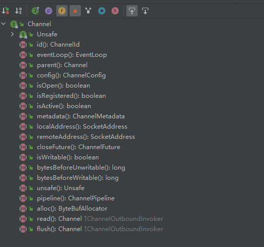
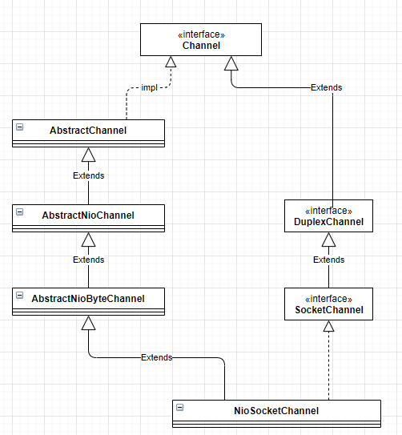
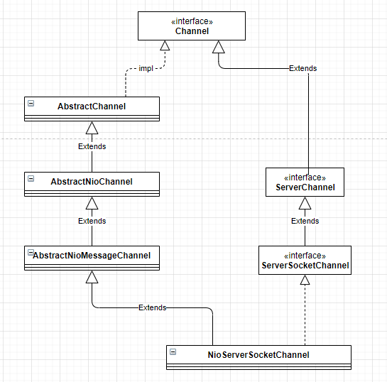

Channel是JDK NIO类库中的一个重要组成，可以理解为数据的通道，提供端口绑定、socket连接、数据读写等功能。
类似的在Netty中，也提供了自己的Channel及其子类实现，用于异步IO和其他相关操作。
1. 主要方法

- Channel read()：从当前Channel中
- Channel flush()：将之前写入的数据全部写入到目标Channel中，发送给通信对方。
- ChannelConfig config()：获取当前Channel的配置信息，例如
CONNECT_TIMEOUT_MILLIS - boolean isOpen()：判断当前Channel是否已经打开
- boolean isRegistered()：判断当前
Channel是否已经注册到EventLoop上 - boolean isActive()：判断当前
Channel是否已经处于激活状态 - ChannelMetadata metadata()：获取当前
Channel的元数据描述信息，包括 TCP 参数配置等。当创建Socket的时候需要制定TCP参数（例如接收和发送的TCP缓冲区大小、TCP的超时时间等）。在 Netty 中，每个 Channel 对应一个物理连接，每个连接都有自己的 TCP 参数配置。所以，Channel 会聚合一个ChannelMetadata 用来对 TCP 参数提供元数据描述信息，通过 metadata()方法就可以获取当前 Channel 的 TCP 参数配置。 - SocketAddress localAddress()：获取当前 Channel 的本地绑定地址
- SocketAddress remoteAddress()：获取当前 Channel 通信的远程 Socket 地址
- EventLoop eventLoop()：一个
EventLoop对应多个Channel，Channel需要注册到EventLoop的多路复用器上，用于处理IO事件。通过eventLoop()方法可以获取到Channel注册的EventLoop - Channel parent()：对于服务端 Channel 而言，它的父 Channel 为空;对于客户端 Channel，它的父 Channel 就是创建它的 ServerSocketChannel
- ChannelId id()：它返回 Channelld 对象，Channelld 是 Channel 的唯一标识。
2. Channel实现类
2.1. NioSocketChannel

NioSocketChannel用于提供Socket连接、数据读写等功能，实际的数据读写操作都发生在NioSocketChannel中。
2.1.1. doConnect
public class NioSocketChannel extends AbstractNioByteChannel implements io.netty.channel.socket.SocketChannel {
@Override
protected boolean doConnect(SocketAddress remoteAddress, SocketAddress localAddress) throws Exception {
if (localAddress != null) {
doBind0(localAddress);
}
boolean success = false;
try {
boolean connected = SocketUtils.connect(javaChannel(), remoteAddress);
if (!connected) {
selectionKey().interestOps(SelectionKey.OP_CONNECT);
}
success = true;
return connected;
} finally {
if (!success) {
doClose();
}
}
}
}
连接到远端服务器，判断localAddress是否为空，如果不为空，直接调用doBind0()方法；继续调用SocketUtils.connect(javaChannel(), remoteAddress)方法发起TCP连接，返回结果有如下三种可能：
- 连接成功，返回true
- 暂时没有连接上（服务端没有返回ACK应答），对于连接结果不确定，返回false
- 连接失败，抛出IO异常
如果返回结果是第2种情况，则将NioSocketChannel中的selectionKey设置为OP_CONNECT进行事件监听。
如果抛出IO异常，说明TCP连接被拒绝，关闭客户端连接。
2.1.2. doWrite
doWrite()方法代码较长，按照逻辑拆分记录。
首先判断需要写出的数据流是否为空。如果为空就表示缓存在ChannelOutboundBuffer中的消息已经发送完成，清楚写操作在Selector上的注册并退出。
if (in.isEmpty()) {
// All written so clear OP_WRITE
clearOpWrite();
// Directly return here so incompleteWrite(...) is not called.
return;
}
然后获取ChannelOutboundBuffer中ByteBuf的数量，获取时通过传入的参数(1024,maxBytesPerGatheringWrite)确定ByteBuf的最大数量和最大字节数。
// Ensure the pending writes are made of ByteBufs only.
int maxBytesPerGatheringWrite = ((NioSocketChannelConfig) config).getMaxBytesPerGatheringWrite();
ByteBuffer[] nioBuffers = in.nioBuffers(1024, maxBytesPerGatheringWrite);
int nioBufferCnt = in.nioBufferCount();
根据获取的到ByteBuf数量分如下情况处理：
- 0：除了ByteBuffers之外还有其他要写的东西，因此可以退回到普通写操作。例如
FileRegion传输文件等。 - 1：如果只有一个ByteBuf需要发送，不需要使用nio的
gathering write去写，直接使用SocketChannel.write()方法即可 - default：ByteBuf数量大于1，使用NIO的gather聚合Buffer写入。可以一次性写入多个Buffer数据。
Gather：gather聚集写入Channel是指在写操作时将多个buffer聚集(gather)后写入同一个channel
Scatter：读操作时从Channel中读取的数据分散(scatter)到多个buffer中
switch (nioBufferCnt) {
case 0:
// We have something else beside ByteBuffers to write so fallback to normal writes.
writeSpinCount -= doWrite0(in);
break;
case 1: {
// Only one ByteBuf so use non-gathering write
// Zero length buffers are not added to nioBuffers by ChannelOutboundBuffer, so there is no need
// to check if the total size of all the buffers is non-zero.
ByteBuffer buffer = nioBuffers[0];
int attemptedBytes = buffer.remaining();
final int localWrittenBytes = ch.write(buffer);
if (localWrittenBytes <= 0) {
incompleteWrite(true);
return;
}
adjustMaxBytesPerGatheringWrite(attemptedBytes, localWrittenBytes, maxBytesPerGatheringWrite);
in.removeBytes(localWrittenBytes);
--writeSpinCount;
break;
}
default: {
// Zero length buffers are not added to nioBuffers by ChannelOutboundBuffer, so there is no need
// to check if the total size of all the buffers is non-zero.
// We limit the max amount to int above so cast is safe
long attemptedBytes = in.nioBufferSize();
final long localWrittenBytes = ch.write(nioBuffers, 0, nioBufferCnt);
if (localWrittenBytes <= 0) {
incompleteWrite(true);
return;
}
// Casting to int is safe because we limit the total amount of data in the nioBuffers to int above.
adjustMaxBytesPerGatheringWrite((int) attemptedBytes, (int) localWrittenBytes,
maxBytesPerGatheringWrite);
in.removeBytes(localWrittenBytes);
--writeSpinCount;
break;
}
}
2.2. NioServerSocketChannel

NIOServerSocketChannel用于服务端，主要是接收客户端连接。
public class NioServerSocketChannel extends AbstractNioMessageChannel
implements io.netty.channel.socket.ServerSocketChannel {
private static final ChannelMetadata METADATA = new ChannelMetadata(false, 16);
private static final SelectorProvider DEFAULT_SELECTOR_PROVIDER = SelectorProvider.provider();
private final ServerSocketChannelConfig config;
private static ServerSocketChannel newSocket(SelectorProvider provider) {
try {
/**
* Use the {@link SelectorProvider} to open {@link SocketChannel} and so remove condition in
* {@link SelectorProvider#provider()} which is called by each ServerSocketChannel.open() otherwise.
*
* See <a href="https://github.com/netty/netty/issues/2308">#2308</a>.
*/
return provider.openServerSocketChannel();
} catch (IOException e) {
throw new ChannelException(
"Failed to open a server socket.", e);
}
}
}
静态方法newSocket()通过SelectorProvider.openServerSocketChannel()方法打开新的ServerSocketChannel通道。
NIOServerSocketChannel构造方法如下：
/**
* Create a new instance using the given {@link ServerSocketChannel}.
*/
public NioServerSocketChannel(ServerSocketChannel channel) {
super(null, channel, SelectionKey.OP_ACCEPT);
config = new NioServerSocketChannelConfig(this, javaChannel().socket());
}
调用父类的构造方法，将NIOServerSocketChannel关注的实践设置为OP_ACCEPT。
2.2.1. isActive
@Override
public boolean isActive() {
return javaChannel().socket().isBound();
}
通过javaChannel().socket().isBound()方法判断是否处于绑定状态。
2.2.2. doBind
@Override
protected void doBind(SocketAddress localAddress) throws Exception {
if (PlatformDependent.javaVersion() >= 7) {
javaChannel().bind(localAddress, config.getBacklog());
} else {
javaChannel().socket().bind(localAddress, config.getBacklog());
}
}
本地监听端口绑定，需要进行JDK版本判定。
2.2.3. doReadMessages
@Override
protected int doReadMessages(List<Object> buf) throws Exception {
SocketChannel ch = SocketUtils.accept(javaChannel());
try {
if (ch != null) {
buf.add(new NioSocketChannel(this, ch));
return 1;
}
} catch (Throwable t) {
logger.warn("Failed to create a new channel from an accepted socket.", t);
try {
ch.close();
} catch (Throwable t2) {
logger.warn("Failed to close a socket.", t2);
}
}
return 0;
}
doReadMessages()方法用于处理客户端连接：
- 通过
SocketUtils.accept()接收一个新的客户端连接 SocketChannel不为空，创建一个新的NioSocketChannel并加入到buf集合中
其他服务端不关注的方法，直接抛出异常，例如
doConnect方法，只在客户端有用。@Override protected boolean doConnect(SocketAddress remoteAddress, SocketAddress localAddress) throws Exception { throw new UnsupportedOperationException(); }